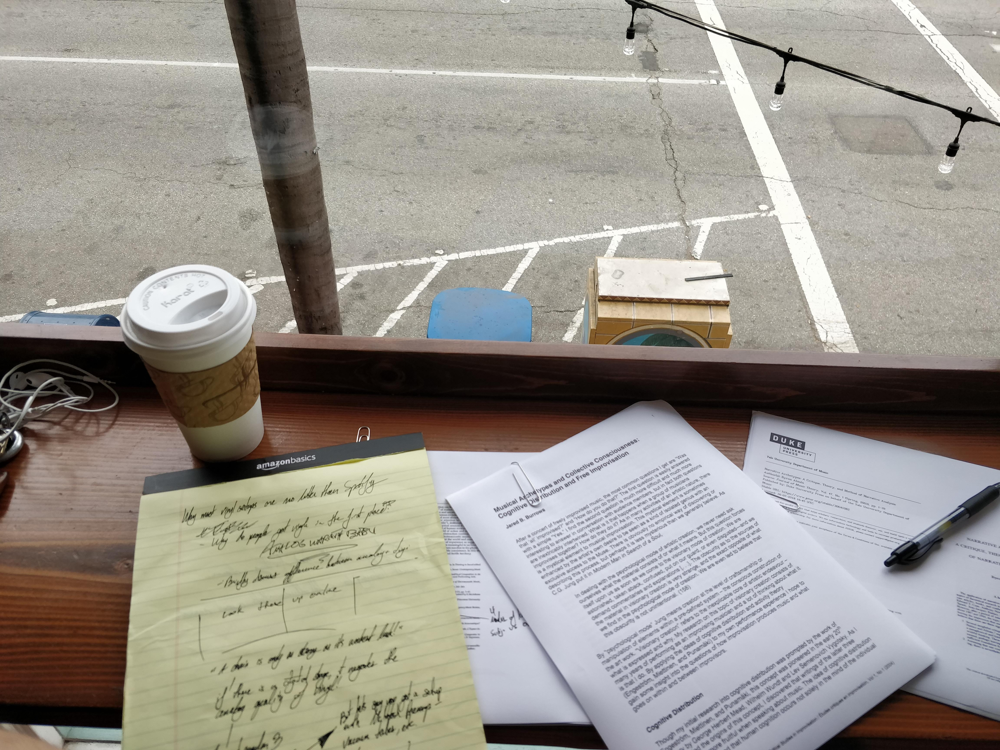

Challenge
Creating this work required keeping in delicate balance three main considerations: my design aesthetic, the interests of the advisory committee, and the use of highly complex technology.
Design Aesthetic
At some level, and against all odds for a dissertation project, I resolved to make a work of art. At present day, art is a lot of different things for a lot of different people. Briefly put, I take a Romantic view of the artistic work - that it should be an expression of intimate personal experience with the intent of communicating this experience.
The Committee
Two features of the PhD process in a digital arts discipline, in particular, create unique challenges. Firstly, there are no longer any widely-agreed-upon standards of better and worse in academic art. The most useful way I found to counteract this was to focus the committee on my technical achievements - software coded, technology used, etc. as these things are more easily quantifiable. Secondly, members of my committee were differently weighted in terms of skill set. This proved to be both a strength and an obstacle. Committee members were able to provide master-level insights into their narrow areas of research that pertained to my work. However, creative members lacked an understanding of the technical elements, and technical members lacked an understanding of the creative elements. I overcame this by overcommunicating in the written dissertation.
High Tech
A full list of technologies used is available further up on the page. The primary technological challenge was linking everything. I settled on a combination of OSC, MIDI, and various C# scripts in order to allow programs such as MaxMSP, Ableton Live, and Unity to "talk" to each other.
Process
As with all of my artistic work, I sought to base this one on a story. The most compelling story for me around the time that I began development on Abstruse was the increased use and dependence of young people on social media, and the effects that this was having on autonomy, mental health, etc.

Concepts Explored
I was reading a lot of material on VR in order to think more clearly about the principles I would explore in my written dissertation when I was drawn to the readings of Luddite author, and inventor of virtual reality, Jaron Lanier. In his work You Are Not a Gadget, Lanier compares exploitative VR development, and by logical extension, social media to the concept of a Skinner Box. You’re probably familiar with the concept as I was even if you don’t recognize the name. A Skinner Box is an apparatus for lab animal stimulus conditioning. A rat that is rewarded with food pellets or shocked with electricity based on its behavior is a simple version of this.
Mediums
In order for the artwork to be maximally expressive in a postmodal domain I knew I had to choose mediums that would help to represent the meaning of the work. I settled upon the medium most traditionally used as a Skinner Box - music, as well as the one that is at highest risk of being used as a Skinner Box in the future - virtual reality.
Conclusion
As with all real-world testing, the results were complex. The work was a success in the regard that it accomplished what it set out to do: portray the manipulative power of technology and social media through operant conditioning of a test subject. While watching the projected output of the VR headset wearer's navigation of the world, I rewarded those who created a pleasing and dynamic flow through the environment by generating harmonious and listenable music. This created a feedback loop of rewards begetting more rewards. Those that deviated from a desirable navigation were stimulated with cacophonous and distorted sounds until they managed to pilot the headset more successfully.
Future Directions
There are two streams of research that must be more sufficiently delved into - audio-first VR, and postmodal studies. Modern VR developers have the opportunity to completely subvert existing video game paradigms in search of something more interesting. Little other than auxiliary work has been done on audio-first visuals. Postmodal studies, taken more seriously in academia, would not only serve to open more career doors for artists, but also rapidly accelerate the rate at which postmodernism can be banished from any serious study.